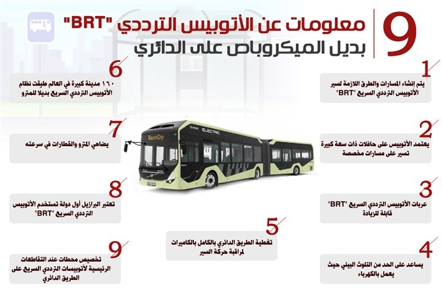

اهمية وسائل النقل الحديثة:
التطور فى وسائل النقل الجماعى يمثل نقلة حضارية كبيرة ، وتتسم هذه النوعية من وسائل النقل بأنها سريعة وعصرية وآمنة وصديقة للبيئة، وتوفر استهلاك الوقود، وتخفض معدلات التلوث البيئي، وتخفف الإختناقات المرورية بالمحاور والشوارع الرئيسية، وتجذب الركاب لإستخدامها بدلاً من السيارات الخاصة.

أولاً:
مشروع المونوريل حيث يربط إقليم القاهرة الكبرى بالمناطق والمدن العمرانية الجديدة شرقاً "القاهرة الجديدة ، العاصمة الإدارية". ويساهم المونوريل في تيسير حركة نقل الموظفين والوافدين من القاهرة والجيزة إلى القاهرة الجديدة والعاصمة الإدارية، ويتقابل مع الخط الثالث للمترو عند محطة الاستاد بمدينة نصر، ومع القطار الكهربائي بمحطة مدينة الفنون بالعاصمة الإدارية الجديدة.

تفاصيل مشروع المونوريل:
يتكون كل قطار مونوريل من 4 عربات، ومن المخطط زيادة عدد العربات إلى 8 عربات. الطاقة الاستيعابية لكل خط من خطي المونوريل تبلغ 600 ألف راكب يومياً، وتتميز قطارات المونوريل أنها تعمل بدون سائق وتبلغ السرعة التصميمية لها 90كم/ساعة، ويبلغ زمن التقاطر بخطى المونوريل ٩٠ ثانية. وتتضمن عربات القطارات، ممرات ممتدة تسمح بانتقال الركاب بين العربات وكاميرات تليفزيونية متصله بكابينة القطار للمراقبة المركزية للسكة،وشاشات LED لاستخدامها في تزويد الركاب بمعلومات عن الرحلة ،ويمكن استخدامها في بث الإعلانات التجارية . تخصيص أماكن للكراسي المتحركة الخاصة بذوي الاحتياجات الخاصة، وخرائط أعلى أبواب الركاب من الداخل، تبين المسار عن طريق لمبات مضيئة لمساعدة فاقدي حاسة السمع.

طول مشروع المونوريل وموعد انطلاقه:
يمتد مشروع مونوريل في أولى مراحله من محطة الإستاد بمدينة نصر، حتى محطة مدينة العدالة بالعاصمة الإدارية ، بطول 53 كم ويشمل 22 محطة، سيتم افتتاح المرحلة الاولى في أول أكتوبر2022. من المقرر افتتاح المرحلة الثانية من المشروع خلال شهر فبراير من عام 2023 العام المقبل، ويبلغ طولها 42 كم، وتصل إلى مدينة السادس من أكتوبر.

ثانياً:
تسعى الدولة متمثلة في الهيئة العامة للطرق والكباري، بشكل مستمر على راحة المواطن المصري، وضمن مخطط الدولة لتوسعة وتطوير الطرق. و قامت الحكومة بالاستعداد لإلغاء سير سيارات الميكرباص على الطريق الدائري واستبداله بالأتوبيس الترددي في إطار خطة وزارة النقل لاستخدام منظومة نقل متطورة وذكية، وإنشاء شبكة BRT لتكون الاطول في العالم بطول 106 كم.

تفاصيل مشروع الاتوبيس الترددي:
ويعتبر الأتوبيس الترددي BRT حافلة نقل سريعة كبيرة تعمل بالكهرباء، يوفر حالة من الامان والسرعة والراحة لجمهور الركاب من المواطنين، فضلاً عن كونه سيساعد على خفض حوادث الطرق، وتنمية موارد الحكومة. ويجري حاليًا العمل في مسارات الأتوبيس الترددي BRT على الطريق الدائري، والتي من المقدر أن تزيد عن 50 محطة، تبدأ من محطة المشير طنطاوى حتى محطة مدخل التجمع ويعمل الأتوبيس الترددي BRT بالكهرباء، ويعمل على توفير حالة من الامان والسرعة والراحل لجمهور الركاب من المواطنين، حيث تبلغ السرعة القصوى له نحو 70 كم/ ساعة، وتم إنتاجه محليًا بنسبة 60%. ويقطع الأتوبيس الترددي BRT مسافة تصل إلى 350 كم بالشحنة الواحدة، ويمكنه العمل لمدة 8 ساعات في اليوم ويضم 49 مقعدًا قابلة للزيادة.
موعد تشغيل الاتوبيس الترددي:
ومن المتوقع أن يتم إتاحة وتشغيل الأتوبيس الترددي BRT أمام جمهور الركاب، في نهاية العام الحالي 2022، ليكون بديلاً لسيارات الميكروباص على الطريق الدائري.